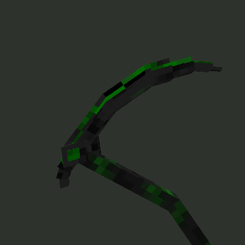
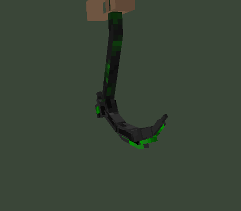

Blood Scythe, green
Blood Scythe's tall hooked blade and shading, red rotated to green.


The Blood Scythe reference (Linaryx, MIT licensed, Modrinth), same model and
shading, with its red hue-rotated to green - the actual pack's geometry and hand-painted
banding, not a repaint from scratch. Tell the hub if this is the one in-game
(/shenron or chat it to Claude) and it'll apply with
/cosmetic done 4.
Blood Scythe's tall hooked blade and shading, red rotated to green.


Temporary preview page for a pending cosmetic token request. This page is not linked from the site and will be removed once the pick is applied.